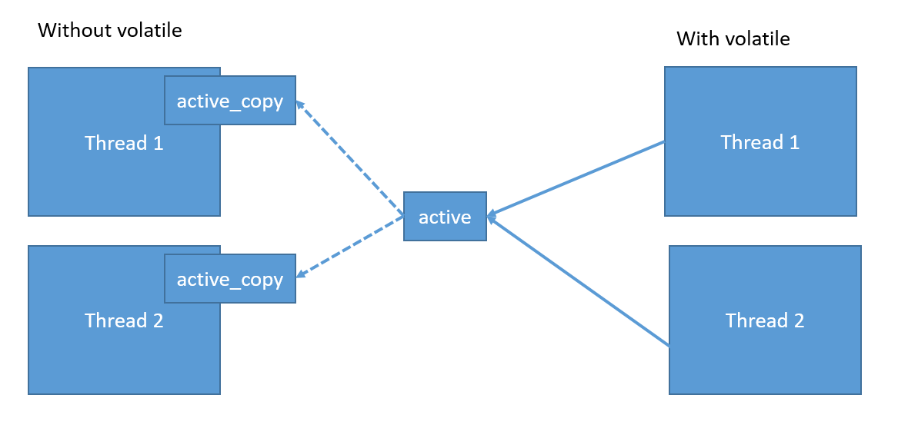

Java - Modifier Types
Trong bài học này ta sẽ đi tìm hiểu lại các Modifier trong Java
Trong Java thì ngta chia làm 2 loại, Access Modifier và Non-access Modifier.
Java Access Modifiers
Có 4 level cần ghi nhớ
- default - visible to the package, the default. No modifier are needed
- private - visible to the class oly
- public - visible to the world
- protected - visible to the package and all subclasses.
Default Access Modifier - No Keyword Default
Default access modifier means we do not explicitly(rõ ràng - /ɪkˈsplɪs.ɪt/) declare an access modifier for a class, field,
method, etc.
A variable or method declared without any access control modifier is available to any other class in
the same package. The fields in an interface are implicitly public static final and the methods in
an interface are by default public.
Private Access Modifier - Private
Methods, variables, and constructors that are declared private can only be accessed within the
declared class itself.
Private access modifier is the most restrictive access level. Class and interfaces cannot be
private.
Variables that are declared private can be accessed outside the class, if public getter methods are
present in the class.
Using the private modifier is the main way that an object encapsulates itself and hides data from the outside world.
Public Access Modifier - Public
A class, method, constructor, interface, etc. declared public can be accessed from any other class. Therefore, fields, methods, blocks declared
inside a public class can be accessed from any class belonging to the Java Universe.
However, if the public class we are trying to access is in a different package, then the public
class still needs to be imported. Because of class inheritance, all public methods and variables of
a class are inherited by its subclasses.
Protected Access Modifier - Protected
Variables, methods, and constructors, which are declared protected in a superclass can be accessed
only by the subclasses in other package or any class within the package of the protected members'
class.
The protected access modifier cannot be applied to class and interfaces. Methods, fields can be
declared protected, however methods and fields in a interface cannot be declared protected.
Protected access gives the subclass a chance to use the helper method or variable, while preventing
a nonrelated class from trying to use it.
Access Control and Inheritance
Có những lưu ý sau đối với cái access modifier
- Method được khai báo public ở class cha thì cũng phải được khai báo public ở các class con
- Method được khai báo protected ở class cha thì phải khai báo protected hoặc public ở class con. Không thể khai báo private
- Method được khai báo private thì tất cả các class khác đều ko nhìn thấy, nên chả cần phải bận tâm về thằng này.
Java Non-Access Modifiers
Đối với Non-access modifier thì gồm có các từ khóa sau :
- static - for creating class methods and variable
- final - for finalizing the implementations of classes, methods and variables
- abstract - for creating abstract classes and method
- synchronized (/ˈsɪŋ.krə.naɪz/ ) and volatile (/ˈvɒl.ə.taɪl/) - used for thread.
The Static Modifier
Sử dụng với Variable và Method của class
Có những điểm sau cần ghi nhớ
Static Variables
Sử dụng để tạo những variable cho tất cả các instances được khởi tạo từ class đó. Đúng ra thì nó tạo ra instance variable của Class, nên toàn bộ các class con có thể sử dụng thoải mái, và luôn luôn chỉ có 1 static variable trong toàn bộ hệ thống. - Hiểu nôm na là mỗi static variable thì chỉ tồn tại tại 1 vùng nhớ trên hệ thống.
Nó còn được biết đến với tên gọi khác là Class - variables.
Static Methods
Static còn được dùng để tạo nên method của class. Cứ nhắc tới static, ta phải nhớ ngay tới những cái này là của class chứ ko phải của object.
Static method thì nó ko dùng bất cứ dữ liệu nào của object, mà nó sẽ sử dụng các tham số truyền từ bên ngoài vào. Nói cách khác thì ko thể sử dụng this.properties trong này, bởi đơn giản nó là của class không phải của object.
The Final Modifier
Sử dụng với Variable, Method và Class
Khi nhắc tới final, ta nghĩ tới những cái "cuối cùng". Trong class, khi 1 biến là "cuối cùng" thì nó sẽ không thể thay đổi được, một method là "cuối cùng" thì nó ko thể bị override được (Lưu ý override nhé, ko phải là overload nhé) và một class được khai báo là "cuối cùng" thì nó coi như tuyệt tử tuyệt tôn - tức là ko có bất cứ thằng con nào kế thừa nó nữa.
Mục đích của final modifier là ngăn chặn việc thay đổi nó từ các object khác.
Final Variables
Một final variable thì chỉ có thể được khởi tạo một cách rõ ràng (explicitly initialized) chỉ 1 lần. Một biến tham chiếu được khai báo là final thì nó không thể gán lại giá trị tới một object khác.
** Tuy nhiên, data của nó thì có thể thay đổi, tuy nhiên giá trị tham chiếu của nó không thay đổi
Nó thường được dùng với từ khóa static để khai báo constant cho class
Một biến được khai báo là final thì luôn phải khởi tạo giá trị. Nếu biến đó thuộc Object, nếu nó không được khai báo giá trị từ ban đầu, thì bắt buộc phải khai báo trong constructor, nếu biến đó thuộc class thì nếu nó không được khai báo giá trị ban đầu, thì bắt buộc phải set giá trị cho nó strong static block.
Cái ** có thể được giải thích rõ hơn như sau :
Object A --------------> Address A -----> properties of Object A
Properties of Object A có thể bị thay đổi bởi các method của object, tuy nhiên cái Address của A là ko bao giờ thay đổi, tức là ta không thể gán Object A -------> Address B được.
Final Methods
Một final method thì không thể bị overrider bởi những Subclass.
Mục đích chính của final method đó là ngăn chặn nó bị thay đổi từ bên ngoài.
Final Classes
Mục đích chính của final class đó là ngăn chặn việc kế thừa nó từ các subclass.
The Abstract Modifier
Chỉ sử dụng với class, method
Không có quá nhiều điều để nói về thằng này. Chỉ biết là khi khai báo một method là abstract, thì nó sẽ chuyển trách nhiệm implementation về cho mấy thằng SubClass kế thừa nó. Chỉ có abstract class mới có method class và abstract method phải thuộc abstract class. Do đó, khi khai báo abstract method thì phải khai báo luôn abstract cho class
Abstract Class
Một abstract class thì ko bao giờ được khởi tạo (***). Nếu một class được khai báo là abstract, thì mục đích chính của nó là dùng để mở rộng.
Một class không thể vừa là abstract, vừa là final. Bởi mục đích của thằng abstract là để cho các thằng con extends nó, mà h khai báo là final rồi thì làm sao mà extend được.
Một method có thể có cả abstract method và normal method
Giải thích thêm cho cái ***, ta vẫn có thể new AbstractClass, tuy nhiên sau khi new thì ta bắt buộc phải override các abstract method của nó. Nên cái trên kia cũng ko hoàn toàn là đúng.
Abstract Methods
Abstract method là method được khai báo mà không có bất cứ implementation nào. Method body (implementation) phải được cung cấp bởi subclass. Abstract class không bao giờ được khai báo là final hoặc strict.
Bất cứ class nào extend từ abstract class thì đều phải implement toàn bộ abstract method của super class, trừ khi subclass cũng khai báo method đó là abstract.
Nếu một class chứa một hay nhiều abstract method thì nó cũng phải được khai báo là abstract.
The Synchronized Modifier
Từ khóa synchronized (/ˈsɪŋ.krə.naɪz/) cho biết (indicate) rằng, method chỉ có thể được truy cập bởi duy nhất 1 thread tại cùng 1 thời điểm. Synchronized modifier có thể apply cho 4 kiểu access modifier (public, protected, private, default ở trên đó).
The Transient Modifier
An instance variable is marked transient to indicate the JVM to skip the particular variable when
serializing the object containing it.
This modifier is included in the statement that creates the variable, preceding the class or data
type of the variable.
Chính xác hơn thì cái thằng này khai báo như vậy để JVM bỏ qua giá trị đó khi serializing cái Object đó
The Volatile Modifier
Dùng với method, class, variable.
volatile has semantics for memory visibility. Basically, the value of a volatile field becomes visible to all readers (other threads in particular) after a write operation completes on it. Without volatile, readers could see some non-updated value.
Volatile có ý nghĩa đối với các bộ nhớ hiển thị. Về cơ bản, giá trị của một volatile filed trở nên rõ ràng đối với tất cả các reader - (toàn bộ thread) sau khi một thao tác write được hoàn thành. Nếu ko có volatile thì các reader có thể thấy cái giá trị này ko được cập nhật. Xem ví dụ cuối bài, nếu ko có khai báo volatile thì cái vòng lặp kia sẽ chạy vĩnh viễn, khi mà giá trị active của nó ko được cập nhật lại.
Volatile modifier sẽ thông báo cho JVM biết rằng, việc cập nhật giá trị của field này phải luôn được đồng bộ với memory, và việc đọc giá trị của field này cũng phải đọc giá trị từ memory. Điều này đảm bảo rằng các field được khai báo là volatile có thể được truy cập và cập nhật trong một ứng dụng đa luồng mà không cần sử dụng cái synchronize.
Nói cách khác, khi một giá trị được khai báo là volatile, thì khi có một sự thay đổi nào ảnh hưởng lên nó, thì nó cũng sẽ cập nhật lại giá trị của các object tham khảo đến nó.
public class MyRunnable implements Runnable{
private volatile boolean active;
public void run(){
active = true;
while (active){ // line 1
// some code here
}
}
public void stop(){
active = false; // line 2
}
}
Thông thường, run sẽ được call bởi một thread, và stop sẽ được call bởi 1 thread khác.
Ở line số 1, nó set cái giá trị active của cái số 1 là true, nên vòng lặp sẽ vĩnh viễn không bao giờ dừng lại
Tuy nhiên, ta lại muốn nó kết thúc, khi có 1 thread nào đó cập nhật lại giá trị của nó bằng cái method stop ở dưới
Lúc này từ khóa volatile sẽ được dùng để khi thread 2 chạy, gọi method stop, thì thread 1 cũng cập nhật giá trị active của nó, để cái vòng lặp while kia dừng lại.
Q: Thế ko phải cái Java nó bảo là pass by value - value là address của bộ nhớ à, việc thay đổi giá trị trên vùng nhớ cũng ảnh hưởng global mà. Tại sao lại thêm cái này nữa chi cho phiền hà.
A: Java đều là pass by value, tuy nhiên, việc pass by value của nó có sự khác biệt. Đối vói primitive type, Java sẽ pass cái value của nó - ở đây là giá trị true (- vì set true cho cái active ở dưới), nhưng đối với Object, thì nó pass value - tức là địa chỉ vùng nhớ của object. 1 bên push copy value, 1 bên push cái copy address value nên nó sẽ gặp trường hợp như trên.
Từ khóa volatile cho JVM biết rằng, cái giá trị mà active đang được sử dụng, ko phải là 1 bản copy của biến active, mà là giá trị thật của nó trên bộ nhớ. Nên khi cái thread 2 cập nhật giá trị của active trên bộ nhớ, thì cái thread 1 cũng được cập nhật theo. Xem minh họa đơn giản như hình dưới đây:
